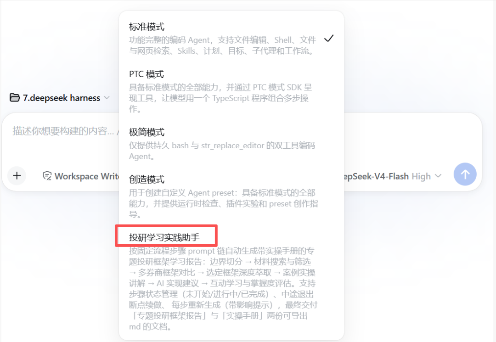
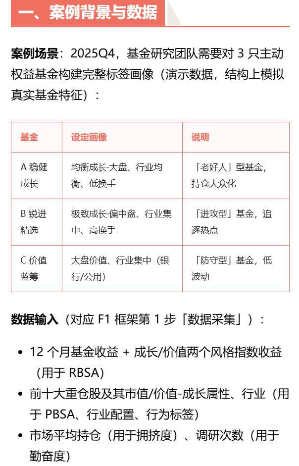
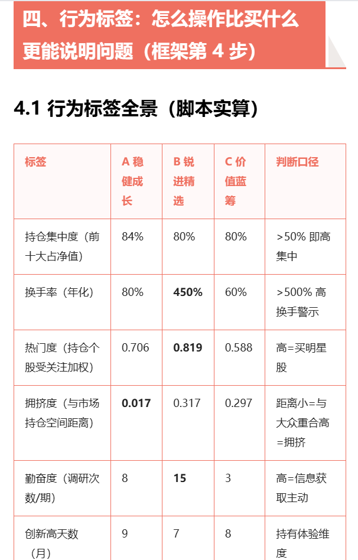
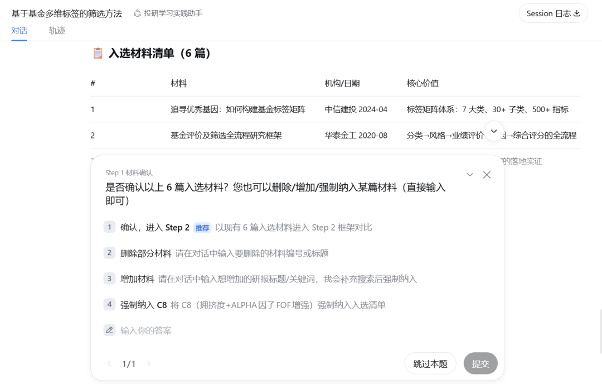
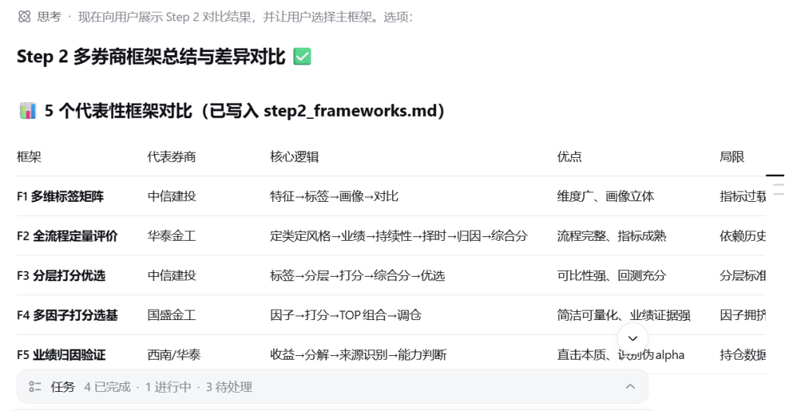
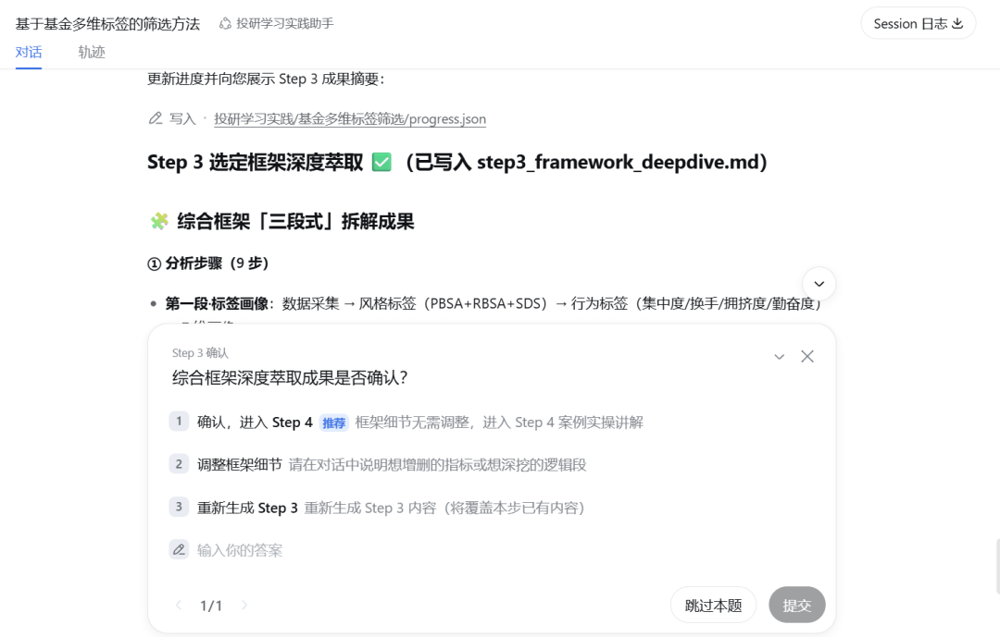

一份好的券商研报，是别人嚼碎了喂给你的投研框架。
而真正会做投研的人，能把框架吐出来、拆开、填上自己的数据、跑一遍。
这中间差的不是知识，是一套可执行的学习流程。
一、痛点：为什么研报读了一堆，还是不会做投研？
这是我自己踩过的坑，估计很多人有同感：
- 读过 ≠ 学会。
研报读的时候频频点头，读完之后只记得结论，记不住框架。等你真想自己分析一个行业时，大脑一片空白。 - 框架没有对比，就没有理解。
同一行业，不同券商用完全不同的框架（供需错配、产业链利润分配、DCF估值……），各说各话。只看一家，容易被单一视角带偏。 - 缺「填空式」落地。
框架描述往往很抽象："关注上游价格、库存天数、宏观利率"——但价格去哪查？库存怎么算？阈值是多少？传导逻辑怎么串起来？研报不会教你。 - 没有实操和反馈。
学完不复盘、不练习、不测试，两周后忘得干干净净。
说白了，研报是「别人的框架」，学习要的是「我的流程」。既然流程是固定的，那它就天然适合交给 Agent 来跑。于是我把这整个学习闭环写成了一份 Prompt，做了一个「投研学习实践助手」。
一句话定义它：输入你想学的投研专题，它按固定流程自动生成一份「专题投研框架学习报告 + 可复用的实操手册 + AI自动化实操建议」，中间每一步停下来等你确认，学完还会出题考你。
二、整体设计：一条五步流水线 + 一个学习闭环
先看全景图。整个 Agent 的流程长这样：
这个流程里有三个我特别想强调的设计，也是这份 Prompt 里最值钱的部分：
设计一：Step 0 边界切分——先对齐「研究什么」
用户输入往往很模糊，比如"我想学光伏投研"。是研究硅料供给周期？还是产业链利润分配？还是估值方法？直接开跑必然跑偏。所以第一步是让模型先给出 2-4 个主题结构、研究框架明显不同的候选专题边界，以卡片 + 按钮形式让用户选，还留了一个自定义输入框支持交叉组合。
这个"先切边界再干活"的思路，适用于几乎所有知识型 Agent：花 10 秒对齐范围，能省掉后面 10 分钟的返工。
设计二：串行五步，同一会话滚动追加
五个步骤不是五个独立任务，而是同一个会话里串行追加 user 消息，每次请求携带全部历史——Step 3 深度萃取时能引用 Step 2 的对比结论，Step 4 案例实操时能引用 Step 3 的指标卡。上下文不断累积，后面的步骤始终"看得见"前面的结论，整份报告才有前后一致的逻辑主线。
设计三：状态管理 + 每步可"重新生成"
每一步都有状态：未开始 / 进行中 / 已完成。中途退出，下次进来直接回到上次停留的步骤，已生成内容全部保留。同时每一步都支持"重新生成"——但会提示：改动可能影响后续步骤。
这是长流程 Agent 的刚需。没有状态管理的学习流程，退一次全白干；有了它，五步流水线才敢让人放心地在里面泡两个小时。
三、先看效果
在deepseek harness中创建【投研学习实践助手】agent，创建成功后可以在会话界面的模式选择中找到，选择该模式进入对话即可。



四、提示词（片段）
完整提示词有点长，这里仅展示片段（完整提示词可在关注公众号后私信联系）
帮我做一个[投研学习实践助手]agent，按固定流程步骤prompt链自动生成一份带实操手册的专题投研框架学习报告。
一、agent流程
用户输入一段话，描述要学习和实操的投研专题，点击“开始分析”：
1.先跑step0边界切分：模型给出2-4个主题结构、研究框架明显不同的候选专题边界，卡片下方出现[候选一/二/三/四]按钮+一个自定义输入框（支持交叉组合，回车确认）。
2.用户选定专题边界后自动串行执行5步：
（1）step1：材料搜索与筛选
搜索与用户输入专题匹配度较高的10篇左右相关材料......用户可删除/增加研报，或强制纳入某篇特定报告，确认后进入step2
（2）step2：多券商分析框架总结与差异对比
基于入选材料，总结不同券商/机构对该专题的分析框架......用户在此处选择一个感兴趣的框架，作为后续深度学习与案例实操的主框架。
（3）step3：选定框架深度萃取
从对应研报材料中总结出一套完整的、可操作的投研分析框架，并形成结构化模板......用户可在此步骤调整框架细节，确认后进入案例实操。
（4）step4：原理拆解与具体案例实操讲解
结合一个具体案例，把选定框架的每一步应用到真实环境中，展示完整分析过程，并给出可复用的实操步骤......用户可要求“换一个案例”或“用我提供的数据重新跑一遍”，确认后进入互动学习。
（5）step5：投研实操的AI实现建议
根据上述实操案例，给出相关AI自动化生成的项目建议，例如，如何制作该专题相关的投研skill、投研web应用等。
3.互动学习
基于前5步生成的报告，设计一套互动对话机制，帮助用户巩固知识，并评估掌握程度。
互动形式设计......
4.用户确认学习结束后，输出最终交付物如下（交付物支持导出为md文件）：
（1）专题投研框架报告，模板如下：
（2）实操手册，模板如下：
五、五步流水线拆解
下面逐步拆开讲。每一步的产出物、交互点（用户在哪确认、能改什么）都写清楚了。
STEP 1
材料搜索与筛选：先圈出高质量知识源
围绕选定专题搜索约 10 篇匹配材料，筛出 3-6 篇高质量、覆盖不同分析视角的，做结构化摘要。
入选清单含：标题、机构、日期、核心观点、分析框架标签（供需错配 / 产业链利润分配 / DCF……）、可信度与相关性评分、来源 材料来源优先级：公开券商研报 > ima知识库【公众号文章】 > 大模型底座知识——事实类内容优先用一手研报，而不是模型脑补 用户可删除/增加研报，或强制纳入某篇报告，确认后进 Step 2 
STEP 2
多框架总结与差异对比：把"各家说法"摊在一张表上
对每篇研报做框架识别，聚类相似框架，抽象出 3-6 个代表性框架，生成对比表。
每篇研报识别两条线：核心逻辑链（驱动因素 → 传导路径 → 关键指标 → 结论）和框架类型（自上而下/自下而上、定性/定量、周期/成长/价值） 对比表维度：框架名称、核心假设、关键变量、逻辑传导链、适用市场环境、优点、局限/风险、代表券商 用户在这里选一个框架作为后续主框架，也可选"综合框架"由 Agent 融合生成混合框架
这一步是整个流程的认知增量最大的地方：单看任何一篇研报都得不到这张对比表。

STEP 3
选定框架深度萃取：把框架变成"填空题"
锁定该框架对应的 2-5 篇核心研报，深度提取后转化为可操作的填空式模板。
提取内容：核心逻辑与核心问题、关键假设、分析步骤、关键变量及数据来源、计算算法逻辑、指标阈值、传导路径图、历史适用性 填空式模板长这样： 输入变量：
上游价格变化、行业库存天数、宏观利率方向
计算逻辑：基金评价得分 = ……
判断规则：若硅料价格连续两个季度下跌且库存超过 30 天，则进入供给过剩阶段
输出结论：产业链利润将向下游电池片/组件环节转移产出物：深度拆解报告、框架逻辑传导图、关键指标卡（含义 / 数据来源 / 更新频率 / 计算公式 / 常用阈值）、适用边界与失效条件 用户可增删指标、互动深挖框架逻辑，确认后进案例实操
从"框架描述"到"填空式模板"，就是从「读过」到「能用」的那一跃。

STEP 4
原理拆解 + 案例实操：框架在真实数据上跑一遍
Agent 自动匹配一个典型时间区间或具体标的作为案例，把框架的每一步应用到真实环境。
- 介绍案例背景
- 按框架逐步分析
：从什么渠道获取哪些底层数据 → 如何算出关键指标 → 指标间传导逻辑 → 如何得出最终结论 - 穿插原理讲解
：为什么这一步看这个指标？背后的经济学/金融学原理是什么？ - 复盘
：该案例中框架是否有效？失效的话，原因是什么？ 生成可复用的案例模板、关键指标及算法卡，以后可以套到其他季度或标的 用户可"换一个案例"，或"用我提供的数据重新跑一遍"
STEP 5
AI 实现建议：从学会到自动化
基于实操案例，给出 AI 自动化的项目建议：怎么把这个框架做成一个投研 Skill、一个投研 Web 应用，把手工填空变成自动取数、自动算指标、自动出结论。
这一步是给 Vibe Coding 玩家留的钩子——学完的框架直接变成可迭代的产品需求文档。
六、互动学习：学完不考，等于白学
报告生成完不是结束。Agent 会基于前五步的内容设计一套互动对话，边学边测，五种题型层层递进：
| 概念复述 | ||
| 选择/判断题 | ||
| 情景应用 | ||
| 指标识别 | ||
| 批判思考 |
评估模型覆盖五个维度：概念记忆、逻辑理解、指标应用、情景分析、批判思考。每轮对话后更新"掌握度雷达图"，最终给出 0-100 的总体评分、各维度得分、薄弱环节诊断、推荐复习模块和进阶学习路径。
这套设计借鉴的是教学心理学的老道理：检索练习（retrieval practice）比重复阅读有效得多。AI 出题 + 即时反馈，恰好把"费曼学习法"自动化了。
七、最终交付物：一份报告 + 一本手册
用户确认学习结束后，导出两份交付物（支持 md 文件）：
交付物一：专题投研框架报告
专题概述 知识源与研报清单 多框架对比与差异分析 选定框架深度拆解（核心逻辑 / 关键假设 / 分析步骤 / 关键指标卡 / 传导路径图 / 适用边界与失效条件） 案例实操详解 框架复盘与修正 附录：指标数据来源、延伸阅读
交付物二：实操手册
框架速查表 一步步操作指南 数据获取与处理模板 案例模板（可复制） 进阶学习路径
注意两个模板的区别：报告是"这门课的讲义"，手册是"考完试还能带走的工具"。前者面向理解，后者面向复用。交付物模板在 Prompt 里直接写死，模型只需要按结构填内容——这是保证多轮生成结果结构稳定的关键技巧。
八、写 Prompt 的可迁移经验
这个 Agent 的提示词本身没有太多黑科技，但有几个做法值得单独拎出来，做任何长流程知识型 Agent 都用得上：
- 固定流程 + 编号步骤。
把流程写成 Step 0-5 的固定链，每步明确"输入是什么、输出是什么、用户在哪确认"。模型自由发挥的空间越小，产出越稳定。 - 先切边界，再干活。
模糊输入先让模型产出候选边界卡片，让用户选。对齐成本远低于返工成本。 - 同一会话滚动上下文。
串行追加而非独立调用，让后面的步骤引用前面的结论，保证整份报告逻辑一致。 - 每步一个人工确认点。
材料可增删、框架可选择、指标可调整、案例可更换——人在环上，AI 在环里跑。既保效率，也保质量。 - 状态管理 + 重生成提示。
支持断点续跑；每步可重新生成，但提示"可能影响后续步骤"，把因果代价讲清楚。 - 输出物用模板锁死。
报告和手册的目录结构直接写进 Prompt，模型填空。多轮生成的结构稳定性全靠这个。 - 闭环要有考核。
生成 ≠ 学会。加一轮出题互动 + 雷达图评估，Agent 才从"内容生产工具"升级成"学习工具"。
· · ·
写在最后
回到开头那个问题：为什么研报读了一堆，还是不会做投研？因为阅读是被动的输入，技能是主动的流程。这个 Agent 做的事情，本质上是把优秀研究员的工作流显式化、模板化、再配上考核——让"学框架"变成"走流程"。
而流程化的东西，恰恰是 Agent 最擅长接管的。你可以把这套 Prompt 里的"投研专题"换成任何领域：行业研究、财务分析、竞品拆解、政策跟踪……五步流水线（圈材料 → 比框架 → 萃模板 → 跑案例 → 做自动化）+ 学习闭环（出题 → 反馈 → 雷达图）这个骨架是通用的。
下一步我打算把它跑在一个真实专题上（基于基金多维标签矩阵的基金筛选方法），看看五步跑完之后，那份实操手册到底能不能直接上手用。跑通了再来写实操篇。
如果你也在用 Agent 重构自己的学习流程，欢迎在评论区交流你的流程设计。
🎁 福利提示：关注本公众号，私信即可获得本文【投研学习实践助手】Agent 的完整提示词，直接复制即可搭建你自己的学习流水线。
💡 一句话总结：把「学习一个投研专题」拆成固定步骤链——边界切分、材料筛选、框架对比、深度萃取、案例实操、AI实现建议，每步带确认点和状态管理，最后用出题互动闭环检验。研报告诉你结论，这个流程教会你方法。